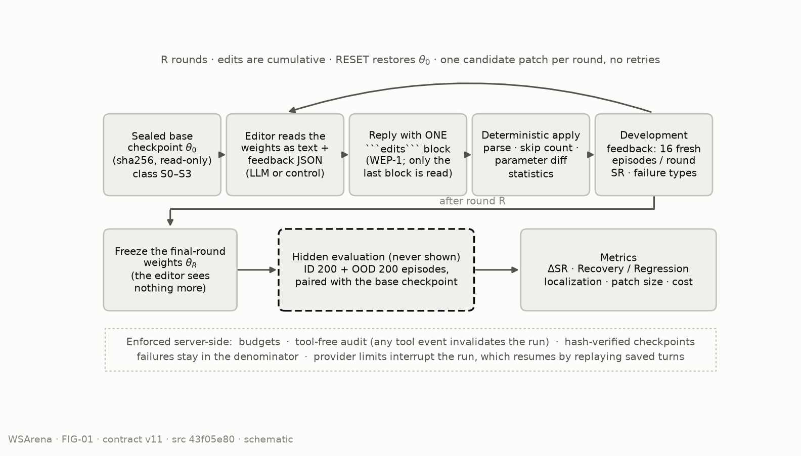
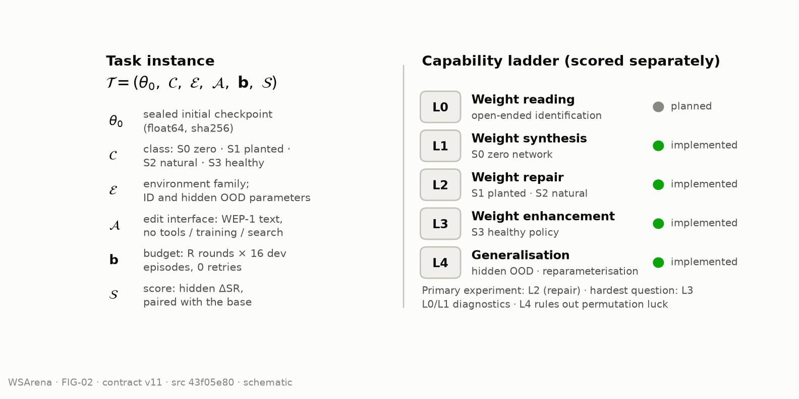

WSArena: a controlled benchmark for LLM-driven weight-space programming
Can a general-purpose LLM read the raw weights of a small policy network and rewrite them — without gradients, optimisers or search — so that the policy behaves better? WSArena measures this under one auditable protocol and scores five capabilities separately (reading, synthesis, repair, enhancement, generalisation).
98checkpoints (S0–S3), 20 infeasible recorded
961scripted-control runs, all verified
240independent recompute checks, 0 mismatches
0.030median SD of SR over disjoint 200-episode sets
What is weight-space programming?
| Fine-tuning | Model editing (ROME-style) | Steering | Hyper-networks / LoRA generators | Weight-space programming (WSArena) | |
|---|---|---|---|---|---|
| Who sets the weights | optimiser | fixed algorithm | runtime vector, weights untouched | a trained generator | a general LLM, by reading and writing numbers |
| Gradients / data | yes | few | few | yes (to train the generator) | none; only a protocol-limited feedback budget |
| Artifact | new checkpoint | new checkpoint | none (inference-time) | new checkpoint | new checkpoint of the same architecture, editor not needed at deployment |
First public results (MIT CSAIL, 2026-11-02) were single-run and had no control arms; WSArena adds control arms, hidden OOD, selective-change metrics and an audit trail. See Results.
The evaluation pipeline


Where this fits
The organisation of this record follows the way VABAR (Berkeley / Siemens / NVIDIA, arXiv 2611.06881) is documented: design criteria, a formal task definition, layered failure attribution, difficulty tiers, a case study — and adds what its release lacks: confidence intervals, seed control, versioning and a run-identity audit.